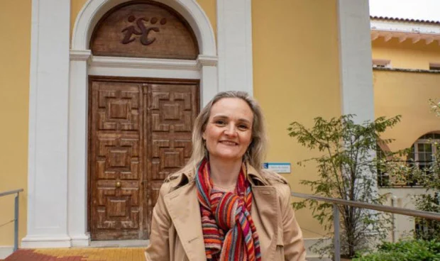

Medicina del Trabajo · Salud Laboral · Políticas de Reincorporación
Médica especialista en Medicina del Trabajo, investigadora y directora de la Escuela Nacional de Medicina del Trabajo (ENMT). Su trayectoria se centra en la reintegración laboral de pacientes tras enfermedad y la humanización de los sistemas de salud laboral.

El trabajo nos da identidad, y la identidad nos da vida.
— Araceli López-Guillén García
No al revés. El puesto debe ajustarse a las capacidades y necesidades del paciente que regresa.
La vuelta al trabajo como parte esencial del proceso de recuperación y bienestar.
Integrar la medicina evaluadora dentro de la práctica asistencial para un enfoque más humano.
Reincorporación laboral tras enfermedades graves, especialmente cáncer
Evaluación de incapacidades y retorno al trabajo
Integración entre medicina clínica y medicina del trabajo
Impacto psicosocial del empleo en la salud
Diseño de políticas públicas basadas en evidencia
Liderazgo en la reactivación y reposicionamiento del principal organismo nacional en medicina del trabajo.
Investigación aplicada en salud laboral y políticas de reincorporación.
Más de una década evaluando incapacidades en el Instituto Nacional de la Seguridad Social.
Experiencia directa en tribunales de valoración de incapacidades.
Iniciativas que han llegado a propuestas legislativas concretas.
Otorgado por la Asociación Española Contra el Cáncer por su contribución a la reincorporación de pacientes oncológicos.
Agradecimiento directo de pacientes oncológicos cuyas vidas fueron transformadas por su trabajo.
Nombramiento como directora en un contexto de crisis institucional, liderando su reactivación.
Entender que su trabajo salvaba vidas desde lo social fue el punto de inflexión de su carrera.
Su valor no está en ser "otra investigadora más" — es la persona que conecta los mundos que normalmente no se hablan.